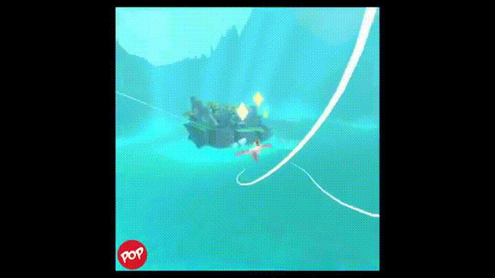

Latest work
Fly like Superman: VR experience
At the beginning of this summer, I met with the Child Life staff at St. Christopher’s Hospital to discuss ways VR could assist their patient care. They proposed a VR game could distract patients from procedures and block vision while doctors administer I.V.’s or tend to lacerations. Superhero Flight is a first person flight experience I’m creating to fulfill this purpose. This work was done as part of my 2016 STAR Program and is still a work in progress.
The hospital staff’s criteria for the VR experience:
- The experience shouldn’t be too intense — engaging but not frightening.
- Children on gurneys are limited to less than 160° of neck rotation.
- Hospitalized children don’t always have the ability to use there hands.
With this criteria in mind, I began brainstorming games that would be suitable for this circumstance. One game that inspired me was Reveries: Dream Flight, a third person flying game available on the Oculus Store. It’s fun to play but I wanted to make the flying experience more engaging. I wanted to make a first person POV flight experience where the player’s head direction dictates where they fly. This was a risk because the first person aspect has the potential to induce VR sickness. However, in designing the game I employed a few techniques to help with comfort. One thing that works well for Reveries: Dream Flight’s third person flight is the point of reference that the paper airplane provides to the player.
My first person POV doesn’t allow the same technique, but I added arms to the player’s body to act as a frame of reference. This is similar to a lot of the “cockpit” VR experiences out now. In addition, I added particle effects to reinforce the cockpit effect. Out of the 40+ people I’ve tried my demo with, only three people had mild VR sickness.

This project is the first time I’ve created a Unity game from scratch. While creating it I watched a bunch of tutorials, dissected example projects, and began learning how to logically copy and paste c# scripts/write my own 😀
I showed Superhero Flight to the Child Life staff at St. Christopher’s Hospital on August 24th. They enjoyed it so much that they are looking to do clinical research with it.